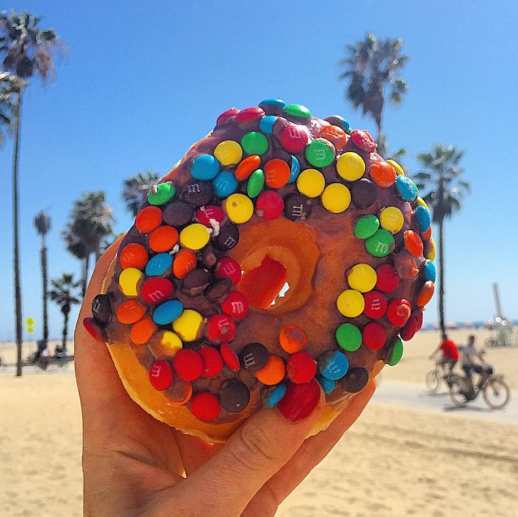
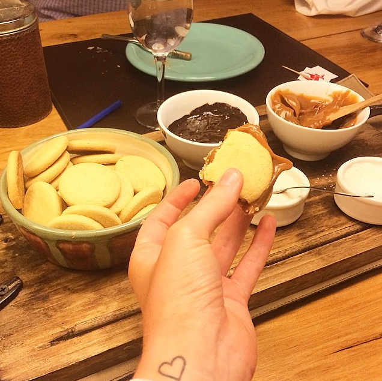
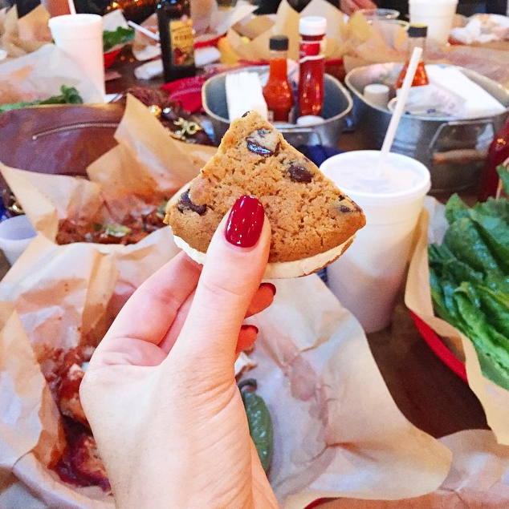
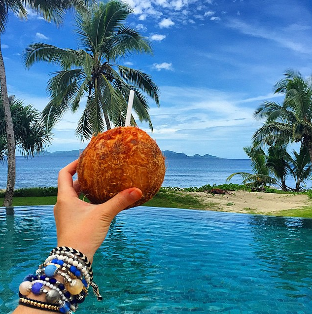
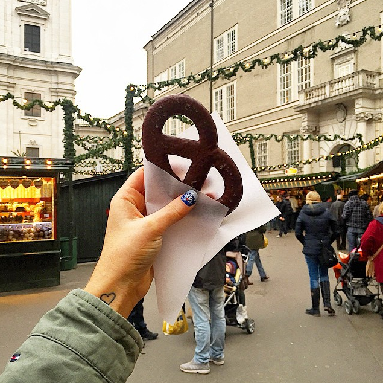
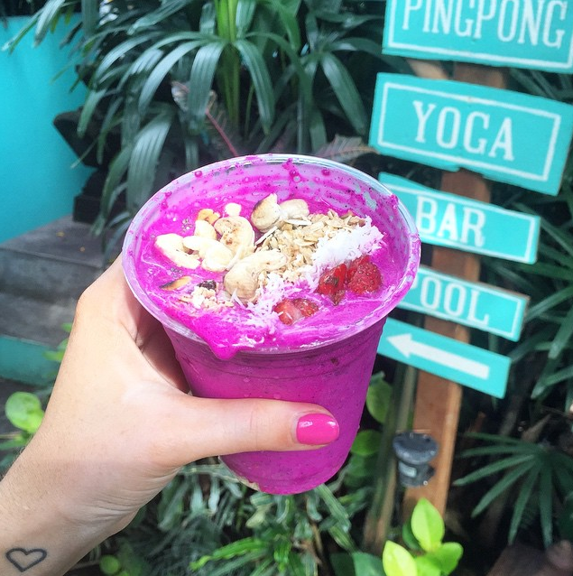
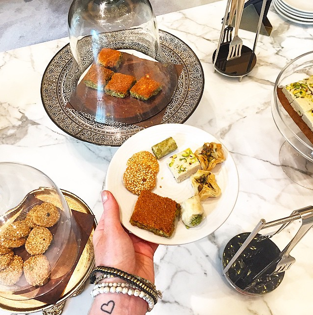
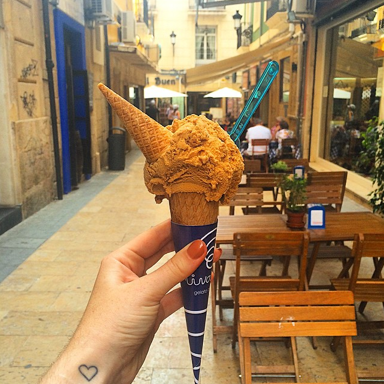
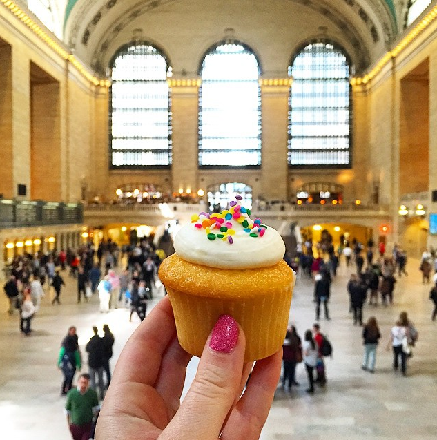
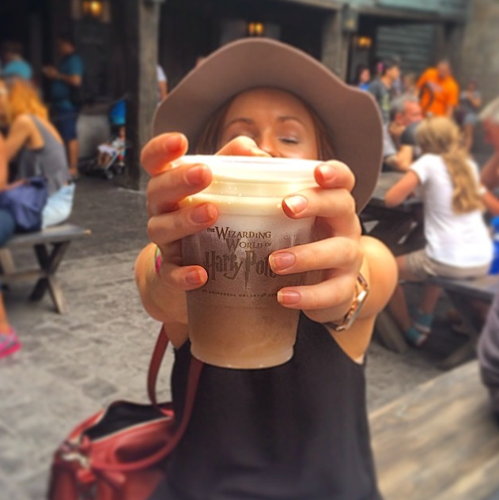

The best foods around the world to try
1. California Donut (USA)

Sometimes pictures just speak for themselves… If you find yourself in LA and have a car (they're a little out of the way), make sure you visit the most
instagrammable donuts the world over. As far as foods around the world go, perhaps there's one just waiting to be eaten in your hometown!
2. Alfajores (Argentina)

You'll find different variations on these biscuit sandwich delights,
but my personal favourite is two biscuits with dulce de leche (warm and gooey) in the centre. In supermarkets, they typically have a lot more going on in the
centre and are covered in a thin layer of chocolate. Regardless, they're all a treat!
3. Arizona Ice Cream Sandwich (USA)

Another biscuit sandwich - but this time with a thick layer of ice cream in the centre.
You'll find them all over the USA, and you'll find it hard to stop once you start…. so maybe skip the mains, and head straight for dessert.
4. REAL Coconut Water (Fiji)

Coconut water was (and perhaps still is?) a pretty big worldwide phenomenon, but none of the bottled concoctions come even close to the real deal: drinking coconut water FROM a baby coconut.
You'll find they are in abundance around the Pacific and South East Asia.
5. German (chocolate covered) Pretzel (German Christmas Markets)

Okay okay, so it doesn’t HAVE to be chocolate covered… but you won’t complain if it is. The German Christmas markets are the perfect excuse to eat yourself silly -
and the pretzels are just the beginning. Also be sure not to miss the mulled wine – y-u-m-m-y-y-y-!
6. A “Naga Bomb” (Bali)

Yep – this thing is for real. And yep – this thing is healthy. A Naga Bomb is essentially a smoothie bowl filled with the likes of dragon fruit, mango, banana, coconut milk (in a blender), and topped with strawberries, muesli, nuts, coconut….. etc. You can only get them
from one place in the world where they were created. Find out where in these 20 Best Places in Bali.
7. Arabian Sweet Pastries (Middle East)

If you find yourself in the company of Arabic sweets, don’t ask questions, just eat. The first time I tried Arabic sweet pastries was in Morocco, which was arguably the best due to its’ proximity and influence from France. Dubai also has some great pastry chefs who are whipping up a storm daily, so don’t miss out!
8. Italian Gelato (Italy)

Need I explain? No, I didn’t think so. It’s Italian….. and it’s
gelato….. self explanatory.
9. New York Cupcakes (NYC)

New York knows how to do food exceptionally well… but who doesn’t love a cupcake? They’re available on almost every
corner, but you can’t go past a trip to Magnolia’s Bakery. Y-U-M!
10. Butter Beer (Hogwarts)

Yes, I am being entirely serious because yes, it is entirely possible to drink butter beer…. at Harry Potter World in Orlando! There are two types on the menu: regular ol’
butter beer or the frozen type. The frozen type is WAY better according to me, but y’know… don’t let that sway you.